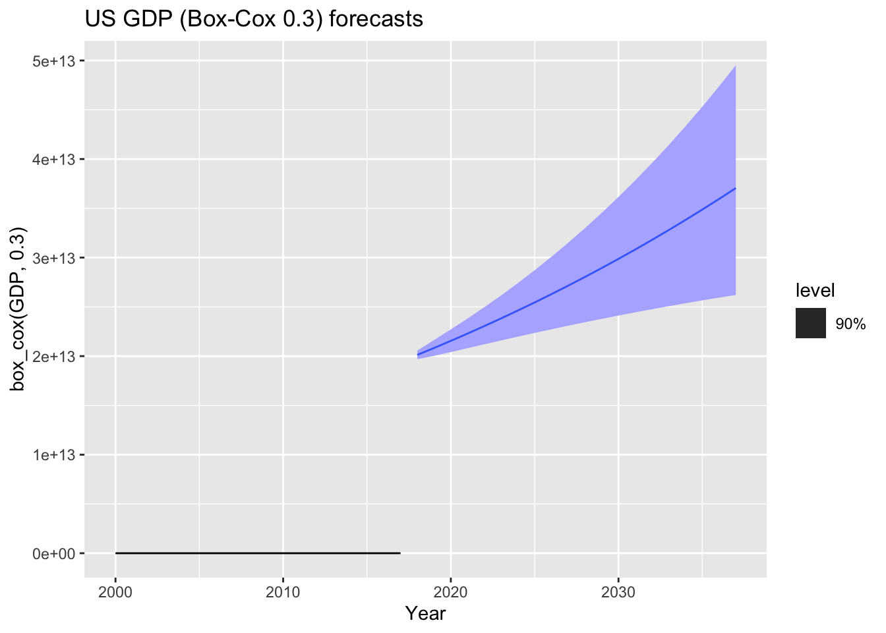
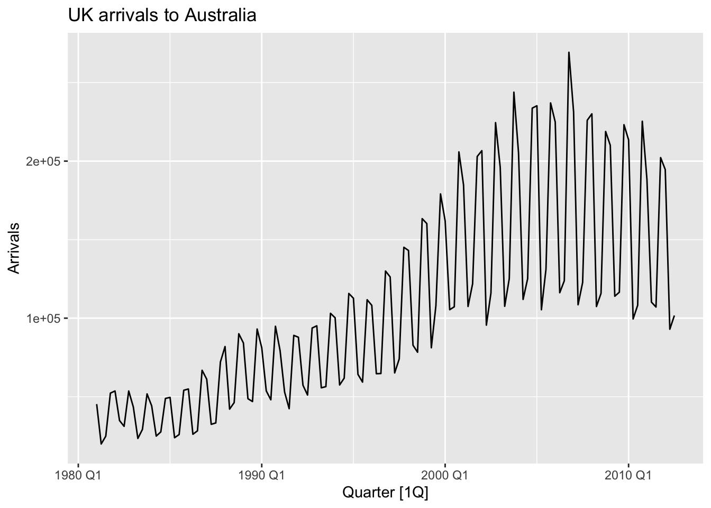
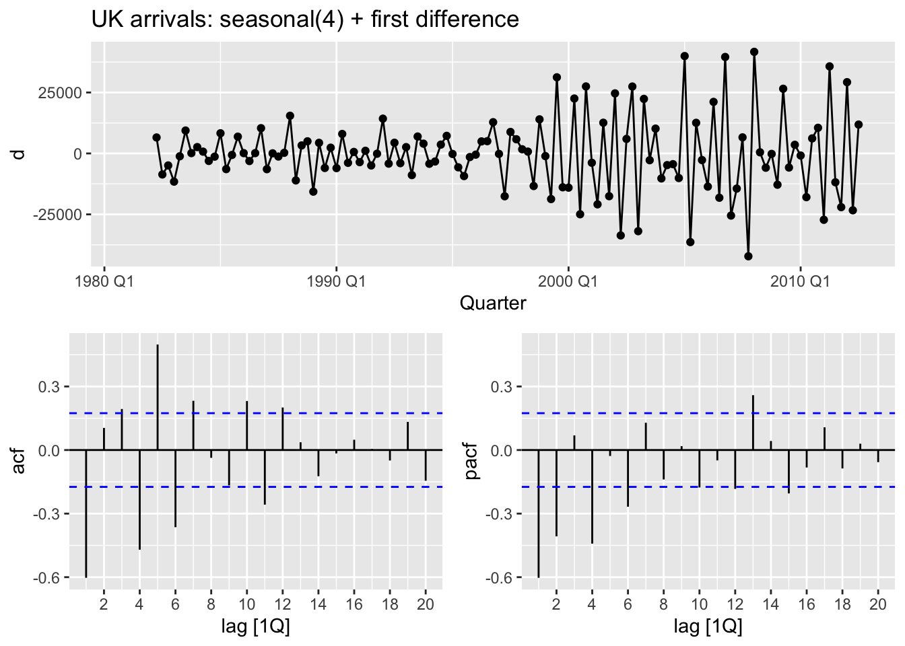
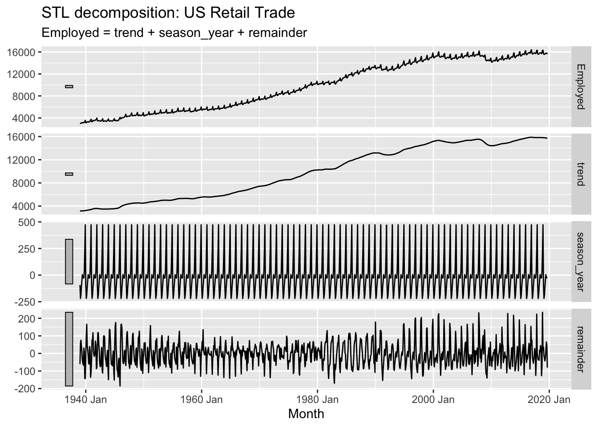

Reading the plot. With \(\phi_1 = 0\) the series is white noise (no persistence). As \(\phi_1\) grows towards \(+1\) the series becomes increasingly smooth and wavy: neighbouring values are strongly positively related, so runs above/below the mean last longer. With \(\phi_1 = -0.6\) the series oscillates rapidly, jumping from positive to negative values each period. Only \(|\phi_1| < 1\) gives a stationary process; larger values (e.g. \(\phi_1 = 1\)) are non-stationary and drift.
# (c) MA(1) with theta_1 = 0.6set.seed(2026)e <-rnorm(100)y <-numeric(100)for (i in2:100) y[i] <- e[i] +0.6* e[i -1]sim_ma <-tsibble(idx =seq_len(100), y = y, index = idx)sim_ma |>autoplot(y) +labs(title ="MA(1) with theta1 = 0.6")
Reading the plot. An MA(1) has memory of only one period, so the series always looks like noisy white noise; changing \(\theta_1\) does not create visible smoothness the way \(\phi_1\) does. What changes is the lag-1 autocorrelation (with \(\theta_1 = 0\) it is plain white noise, and with large \(|\theta_1|\) consecutive observations become mildly related). Unlike an AR(1), any value of \(\theta_1\) still gives a stationary series.
# (e) ARMA(1,1) with phi_1 = 0.6, theta_1 = 0.6set.seed(2026)e <-rnorm(100); y <-numeric(100)for (i in2:100) y[i] <-0.6* y[i -1] + e[i] +0.6* e[i -1]arma11 <-tsibble(idx =seq_len(100), y = y, index = idx) |>mutate(model ="ARMA(1,1)")# (f) AR(2) with phi_1 = -0.8, phi_2 = 0.3 (non-stationary)set.seed(2026)e <-rnorm(100); y <-numeric(100)for (i in3:100) y[i] <--0.8* y[i -1] +0.3* y[i -2] + e[i]ar2 <-tsibble(idx =seq_len(100), y = y, index = idx) |>mutate(model ="AR(2)")
Comparison. The ARMA(1,1) with \(\phi_1 = \theta_1 = 0.6\) is stationary: it wanders around zero with moderate persistence, because the AR and MA parts partly offset each other. The AR(2) with \(\phi_1 = -0.8\), \(\phi_2 = 0.3\) is non-stationary — the AR polynomial has roots inside the unit circle — so the simulated series shows increasing, explosive oscillations whose amplitude grows with time.
Q7. aus_airpassengers
(a) ARIMA model, diagnostics and forecasts.
fit <- aus_airpassengers |>model(ARIMA(Passengers))report(fit)
Result.ARIMA() selects an ARIMA(0,2,1) model with \(\hat\theta_1 = -0.8963\) (AICc = 198.3). Because the series is trended and grows multiplicatively, two non-seasonal differences are used. The Ljung–Box test gives \(p = 0.75\), so there is no evidence against the residuals being white noise (the residual ACF and histogram also look clean). The forecasts continue the upward, slightly accelerating trend.
(b) Backshift-operator form. Using \(\hat\theta_1 = -0.8963\),
This is a random walk with drift: the forecasts are a straight line with slope \(\hat c = 1.42\) million passengers per year. They are similar to part (a) in the short run but are linear, whereas the ARIMA(0,2,1) forecasts are slightly curved and grow a little faster. The AICc (200.6) is barely worse than the selected model.
The ARIMA(2,1,2) with drift fits slightly better in-sample (\(\hat\sigma^2 = 4.03\)) but uses five parameters, giving a worse AICc (206.6) than the parsimonious models. Its forecasts are very similar to (a) and (c). Removing the constant makes the model fail: ARIMA() reports “non-stationary AR part from CSS” and returns a NULL model, because an ARIMA(2,1,2) without a constant cannot capture the growing trend.
Warning: Model specification induces a quadratic or higher order polynomial trend. This
is generally discouraged, consider removing the constant or reducing the number
of differences.
ARIMA() warns that “the model specification induces a quadratic or higher order polynomial trend”. Adding a constant to an already twice-differenced model introduces a deterministic quadratic trend, so the forecasts bend upwards implausibly quickly. This is why the constant is normally dropped from an ARIMA(0,2,1).
# A tibble: 1 × 2
Country lambda_guerrero
<fct> <dbl>
1 United States 0.282
us_gdp |>features(GDP, unitroot_ndiffs)
# A tibble: 1 × 2
Country ndiffs
<fct> <int>
1 United States 2
(a) Transformation. Guerrero’s method gives \(\lambda = 0.28\), so a power transformation (approximately a cube-root / \(\lambda \approx 0.3\)) is appropriate — the series grows multiplicatively and its variability increases with the level. unitroot_ndiffs suggests \(d = 2\), but the automatic model selection below settles on \(d = 1\) with drift, which behaves similarly.
augment(fit_gdp) |>features(.innov, ljung_box, lag =10)
# A tibble: 1 × 4
Country .model lb_stat lb_pvalue
<fct> <chr> <dbl> <dbl>
1 United States ARIMA(box_cox(GDP, 0.3)) 3.80 0.956
ARIMA() selects an ARIMA(1,1,0) with drift on the \(\lambda = 0.3\) data: \(\hat\phi_1 = 0.46\) and drift \(\hat c = 200.5\). The Ljung–Box test gives \(p = 0.96\) — the residuals behave like white noise.
augment(fit_best) |>features(.innov, ljung_box, lag =10)
# A tibble: 1 × 4
Country .model lb_stat lb_pvalue
<fct> <chr> <dbl> <dbl>
1 United States ARIMA(0,2,2) 3.95 0.949
Best model. By AICc the ARIMA(0,2,2) is preferred (\(\hat\theta_1 = -0.50\), \(\hat\theta_2 = -0.25\), AICc = 708.4), just ahead of ARIMA(0,2,1) and ARIMA(2,2,1). Its Ljung–Box \(p = 0.95\) and residual plots are satisfactory. (The automatic ARIMA(1,1,0)+drift is a close, more parsimonious alternative.)
(e) Forecasts.
fit_best |>forecast(h =20) |>autoplot(us_gdp |>filter(Year >=2000) |>mutate(GDP =box_cox(GDP, 0.3)), level =90) +labs(title ="US GDP (Box-Cox 0.3) forecasts", y ="box_cox(GDP, 0.3)")

The forecasts are reasonable: they continue the upward trend of the transformed GDP, and the prediction intervals widen slowly (much more slowly than on the original scale would suggest, which is the point of the transformation).
Both models capture the trend well and give similar point forecasts. On the training data the ARIMA (Box-Cox) model has slightly smaller RMSE/MAE/MAPE. The main practical difference is the prediction intervals: because ETS is fitted to the raw (untransformed) GDP, its intervals widen much faster, so its long-horizon forecasts are far less precise than the ARIMA-on-log forecasts.
Q9. aus_arrivals
(a) Selecting a country — the UK.
uk <- aus_arrivals |>filter(Origin =="UK")uk |>autoplot(Arrivals) +labs(title ="UK arrivals to Australia")

The time plot shows a clear upward trend over 1981–2012 with a strong, stable quarterly seasonal pattern (peaks in the December and March quarters, troughs mid-year). The seasonal amplitude grows as the level rises, suggesting a multiplicative (or log) structure.
(b) Differencing to stationarity.
uk |>features(Arrivals, list(unitroot_nsdiffs, unitroot_ndiffs))
# A tibble: 1 × 3
Origin nsdiffs ndiffs
<chr> <int> <int>
1 UK 1 1
uk |>mutate(d =difference(Arrivals, 4) |>difference()) |>gg_tsdisplay(d, plot_type ="partial") +labs(title ="UK arrivals: seasonal(4) + first difference")
Warning: `gg_tsdisplay()` was deprecated in feasts 0.4.2.
ℹ Please use `ggtime::gg_tsdisplay()` instead.
Warning: Removed 5 rows containing missing values or values outside the scale range
(`geom_line()`).
Warning: Removed 5 rows containing missing values or values outside the scale range
(`geom_point()`).

Both a seasonal difference (\(\text{nsdiffs} = 1\), at lag 4) and a non-seasonal difference (\(\text{ndiffs} = 1\)) are needed, i.e. \((1-B)(1-B^4)y_t\).
(c) ACF of the differenced series.
d <- uk |>mutate(d =difference(Arrivals, 4) |>difference()) |>filter(!is.na(d))d |>ACF(d, lag_max =12) |>as_tibble() |>print(n =12)
# A tibble: 12 × 3
Origin lag acf
<chr> <cf_lag> <dbl>
1 UK 1Q -0.603
2 UK 2Q 0.104
3 UK 3Q 0.194
4 UK 4Q -0.470
5 UK 5Q 0.498
6 UK 6Q -0.364
7 UK 7Q 0.232
8 UK 8Q -0.0368
9 UK 9Q -0.167
10 UK 10Q 0.232
11 UK 11Q -0.258
12 UK 12Q 0.201
The ACF has a large negative spike at lag 1 (\(\approx -0.60\)), a negative spike at the seasonal lag 4 (\(\approx -0.47\)) and a positive spike at lag 5 (\(\approx 0.50\)), with the remaining values decaying gradually. The absence of a sharp cut-off and the significant seasonal lags point to both a non-seasonal and a seasonal MA component (rather than a pure MA(1) or a seasonal-only model).
(d) PACF of the differenced series.
d |>PACF(d, lag_max =12) |>as_tibble() |>print(n =12)
# A tibble: 12 × 3
Origin lag pacf
<chr> <cf_lag> <dbl>
1 UK 1Q -0.603
2 UK 2Q -0.407
3 UK 3Q 0.0690
4 UK 4Q -0.442
5 UK 5Q -0.0281
6 UK 6Q -0.268
7 UK 7Q 0.129
8 UK 8Q -0.139
9 UK 9Q 0.0182
10 UK 10Q -0.177
11 UK 11Q -0.0489
12 UK 12Q -0.183
The PACF also shows large spikes at lag 1 (\(\approx -0.60\)), lag 2 (\(\approx -0.41\)) and the seasonal lag 4 (\(\approx -0.44\)), then decays. Spikes in both ACF and PACF are the signature of a model containing both AR and MA terms, non-seasonal and seasonal.
(e) Model suggested by the plots. A mixed model such as ARIMA(1,1,1)(1,1,1)\(_4\), or more simply ARIMA(0,1,1)(0,1,1)\(_4\), is suggested: the differencing pushes the spikes to lag 1 and lag 4, and both AR and MA structure is present.
(f) What does ARIMA() choose?
uk_fit <- uk |>model(ARIMA(Arrivals))report(uk_fit)
ARIMA() selects ARIMA(2,0,2)(0,1,2)\(_4\) — the same kind of model my ACF/PACF reading suggested (mixed AR and MA, with seasonal MA terms), but with higher orders. The automatic selection (chosen by AICc) is preferable here: the extra AR/MA terms are needed because the one-lag spikes were not clean cut-offs, and its residuals pass the Ljung–Box test (\(p = 0.25\)).
(g) Backshift-operator form. Writing the selected model as
ret |>model(STL(Employed ~season(window ="periodic"))) |>components() |>autoplot() +labs(title ="STL decomposition: US Retail Trade")

The trend rises over the whole period but with clear slowdowns (e.g. around the early-1980s and 1990s recessions and the 2008 GFC). The seasonality is strong and stable, with a distinct within-year pattern (a large build-up towards the December holiday season and a sharp January drop) and the seasonal amplitude growing with the level of the series.
Guerrero’s method gives \(\lambda \approx 0.55\), so a transformation is warranted (roughly a square root, \(\lambda \approx 0.5\)), because the seasonal swings widen as the level grows.
(c) Stationarity / differencing.
ret |>features(Employed, list(unitroot_nsdiffs, unitroot_ndiffs))
Both a seasonal difference (nsdiffs = 1) and a non-seasonal difference (ndiffs = 1) are required after the transformation, i.e. \((1-B)(1-B^{12})y_t\).
ARIMA() selects ARIMA(1,1,2)(2,1,1)\(_{12}\) on the \(\lambda = 0.5\) data, and it has the lowest AICc (1042.6) of the models considered. Its residuals broadly look like white noise, but the Ljung–Box test is marginal (\(p \approx 0.01\) at lag 24) — a little structure remains. A simpler ARIMA(0,1,1)(0,1,1)\(_{12}\) (a “common candidate”) fits much worse (AICc = 1126, Ljung–Box rejects strongly), so it is not adequate here. The selected model is the better choice.
(f) Forecasting the next three years.
fc <- ret |>model(ARIMA =ARIMA(box_cox(Employed, 0.5))) |>forecast(h =36)fc |>autoplot(ret, level =90) +labs(title ="US Retail Trade employment: ARIMA forecasts (3 years)")
The point forecasts continue the recent trend and reproduce the seasonal shape. Comparing with the actual FRED series (BLS retail-trade employment), the very near-term forecasts are close, but the 2020 COVID shock makes the multi-year forecasts (which of course know nothing about it) miss by a wide margin.
(g) How far ahead are the forecasts usable? The 90% interval width, as a fraction of the forecast level, grows roughly like: year 1 \(\approx 3\%\), year 2 \(\approx 9\%\), year 3 \(\approx 15\%\). As a rough rule, forecasts are “sufficiently accurate” while that interval stays within about 10% of the level — i.e. roughly two to three years ahead. Beyond that the bands become so wide that the forecasts are of limited practical use.